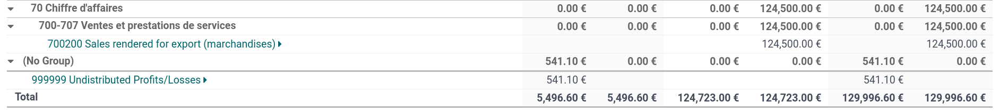

Chart of accounts¶
The chart of accounts (COA) is the list of all the accounts used to record financial transactions in the general ledger of an organization. The chart of accounts can be found under .
When browsing your chart of accounts, you can sort the accounts by Code, Account Name, or Type, but other options are available in the drop-down menu (⋮).
Configuration of an account¶
The country you select during the creation of your database (or additional company in your database) determines which fiscal localization package is installed by default. This package includes a standard chart of accounts already configured according to the country’s regulations. You can use it directly or set it according to your company’s needs.
To create a new account, go to , click Create, and fill in (at the minimum) the required fields (Code, Account Name, Type).
Warning
It is not possible to modify the fiscal localization of a company once a journal entry has been posted.
Code and name¶
Each account is identified by its Code and Name, which also indicate the account’s purpose.
Type¶
Correctly configuring the account type is critical as it serves multiple purposes:
Information on the account’s purpose and behavior
Generate country-specific legal and financial reports
Set the rules to close a fiscal year
Generate opening entries
To configure an account type, open the Type field’s drop-down selector and select the corresponding type from the following list:
Report |
Category |
Account Types |
|---|---|---|
Balance Sheet |
Assets |
Receivable |
Bank and Cash |
||
Current Assets |
||
Non-current Assets |
||
Prepayments |
||
Fixed Assets |
||
Liabilities |
Payable |
|
Credit Card |
||
Current Liabilities |
||
Non-current Liabilities |
||
Equity |
Equity |
|
Current Year Earnings |
||
Profit & Loss |
Income |
Income |
Other Income |
||
Expense |
Expense |
|
Depreciation |
||
Cost of Revenue |
||
Other |
Other |
Off-Balance Sheet |
Assets, deferred expenses, and deferred revenues automation¶
Some account types can automate the creation of assets entries, deferred expenses entries, and deferred revenues entries. To automate entries, click Setup on an account line and go to the Automation tab.
You have three choices for the Automation tab:
No: this is the default value. Nothing happens.
Create in draft: whenever a transaction is posted on the account, a draft entry is created but not validated. You must first fill out the corresponding form.
Create and validate: you must also select a Deferred Expense Model. Whenever a transaction is posted on the account, an entry is created and immediately validated.
Default taxes¶
In the Setup menu of an account, select a default tax to be applied when this account is chosen for a product sale or purchase.
Account groups¶
Account groups are useful to list multiple accounts as sub-accounts of a bigger account and
thus consolidate reports such as the Trial Balance. By default, groups are handled automatically
based on the code of the group. For example, a new account 131200 is going to be part of the group
131000. You can attribute a specific group to an account in the Group field under
Setup.
Create account groups manually¶
Note
Regular users should not need to create account groups manually. The following section is only intended for rare and advanced use cases.
To create a new account group, activate developer mode and head to . Here, create a new group and enter the name, code prefix, and company to which that group account should be available. Note that you must enter the same code prefix in both From and to fields.
To display your Trial Balance report with your account groups, go to , then open the Options menu and select Hierarchy and Subtotals.
Allow reconciliation¶
Some accounts, such as accounts made to record the transactions of a payment method, can be used for the reconciliation of journal entries.
For example, an invoice paid with a credit card can be marked as paid if reconciled with its payment. Therefore, the account used to record credit card payments needs to be configured as allowing reconciliation.
To do so, check the Allow Reconciliation box in the account’s settings, and Save; or enable the button from the chart of accounts view.
Deprecated¶
It is not possible to delete an account once a transaction has been recorded on it. You can make them unusable by using the Deprecated feature: check the Deprecated box in the account’s settings, and Save.